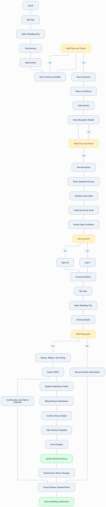

Wedding Maya | Destination Wedding Organizer
1. Persona
Name and Background
Name: Maya Rodriguez
Age: 29
Role: Destination Wedding Organizer
Trip: Destination Wedding
Group: Wedding Guests and Bridal Party
Maya is organizing a destination wedding that brings together friends and family for a celebration away from home. She enjoys researching beautiful destinations, churches, reception venues, and memorable activities that will make the experience special.
Maya is organized and comfortable using technology to coordinate travel and events. She wants guests to feel informed and prepared without having to personally answer questions about every activity.
Although Maya enjoys planning, coordinating a destination wedding involves managing schedules, locations, reservations, attendance, and last-minute changes. She needs a reliable way to communicate finalized plans and keep guests informed.
2. Technology
Devices
- Primary: Apple MacBook Air 13-inch (M2) for planning and reservations.
- Secondary: Apple iPhone 15 Pro for accessing the itinerary while traveling.
- Additional: Apple Watch Series 9.
Technology Proficiency
Maya has moderately high to high technology proficiency. She regularly uses travel websites, social media, group chats, and online booking platforms, although she is not a technical professional.
She learns new applications quickly but prefers intuitive websites that do not require extensive instructions. She uses her MacBook for detailed planning and her iPhone to access schedules, locations, and updates during the trip.
Loves
- Planning memorable experiences for friends and family.
- Beautiful destinations and unique activities.
- Having plans organized before the wedding.
- Discovering venues and churches through Instagram and TikTok.
- Knowing who plans to attend each wedding activity.
Hates
- Answering the same logistical questions repeatedly.
- Chasing guests for RSVPs.
- Last-minute cancellations and schedule changes.
- Information scattered across emails, texts, and group chats.
- Having to communicate the same update to multiple guests.
Frustrations and Needs
Maya's biggest frustration is becoming the primary source of information for everyone attending her destination wedding. Guests frequently ask about ceremony times, reception locations, transportation, dress codes, and other details that have already been communicated.
Wedding information is often scattered across emails, booking confirmations, text messages, and social media. Maya wants a centralized itinerary where guests can independently find the information they need.
She also needs to collect accurate attendance information for individual wedding activities. When plans change, she wants the updated information to appear in the shared itinerary and be communicated through email rather than contacting each guest individually.
3. Attitudes and Behaviors
Maya enjoys planning ahead and creating meaningful experiences for friends and family. She is detail-oriented and prefers researching venues, churches, and activities before making final decisions. She frequently discovers inspiration through Instagram, TikTok, and travel websites, then coordinates reservations directly with the venues.
Maya likes to organize information as soon as details are confirmed. Although she may know the church or reception venue before the event times are finalized, she understands that activities require a scheduled start and end time before they can be added to the shared itinerary. She keeps preliminary details in her personal planning notes until the schedule is ready.
Once activities are scheduled, Maya enters their dates, times, locations, costs, and important notes into the trip planner. She uses email invitations to provide guests with access to the shared itinerary and relies on Going, Maybe, or Not Going responses to help coordinate attendance.
During the destination wedding, Maya uses her iPhone to review the itinerary and make updates when necessary. She expects guests to check the shared schedule independently and receive email notifications when activity details change. Her goal is to spend less time managing logistics and more time enjoying the celebration.
4. User Story
As a destination wedding organizer, I want to share one itinerary so guests can access event details and RSVP independently.
5. Use Case
Use Case Statement
As the organizer of a destination wedding, I need to schedule and share ceremony and reception details so guests can find the information they need and confirm their attendance.
Scenario
Maya is organizing a destination wedding for friends and family. She has confirmed the church and reception venues, but initially does not know the exact event times. She keeps the preliminary information in her personal planning notes while she works with the venues to finalize the schedule.
Once the ceremony and reception start and end times are confirmed, Maya logs into the trip-planning website and adds both activities to her existing wedding trip. She includes the venue names, addresses, descriptions, and important guest information.
Maya invites adult wedding guests through email. After accepting their invitations, guests can access the shared itinerary and submit Going, Maybe, or Not Going responses for activities that require an RSVP.
As the wedding approaches, Maya reviews attendance totals within the trip itinerary. If a ceremony or reception detail changes, she updates the activity and the website sends an email notification to accepted travelers.
Preconditions
- Maya has an existing account with the trip-planning website.
- She has already created her destination wedding trip.
- The church and reception venues have been selected.
- The ceremony and reception start and end times have been confirmed.
- Maya has the email addresses of the adult guests she plans to invite.
Postconditions
- The ceremony and reception are saved as activities within the wedding trip.
- Each activity includes a valid date, start time, end time, and location.
- All accepted trip travelers can view the activities.
- Guests can submit Going, Maybe, or Not Going responses when RSVP is enabled.
- Maya can review attendance totals within the itinerary.
- Activity updates appear in the shared itinerary and trigger email notifications to guests.
6. Detailed User Interaction Flow
Maya's interaction flow follows the same eight-page trip-planning website used by the other personas. She uses her existing account and wedding trip to add activities, invite guests, collect RSVPs, and communicate schedule changes.
Access the Wedding Trip
Step 1: Log In
Maya: Opens the trip-planning website on her MacBook and selects Log In.
Website: Displays the login form with:
- Email Address
- Password
- Log In button
Maya: Enters her credentials and selects Log In.
Website: Validates her credentials. If incorrect, an error message appears. If valid, the website opens My Trips.
Step 2: Select Destination Wedding
Maya: Finds her existing destination wedding trip in My Trips and selects it.
Website: Opens the trip itinerary and displays existing activities in chronological order, along with organizer controls for adding or editing activities.
Add the Wedding Ceremony
Step 3: Open Add Activity
Maya: Selects Add Activity from the trip itinerary.
Website: Opens the Add Activity form with the following fields:
- Activity Name
- Activity Type: Core or Optional
- Activity Date
- Start Time
- End Time
- Location Name
- Location Address
- Description
- Estimated Cost
- Cost Notes
- Event Notes
- Reservation Confirmation
- Reservation Link
- RSVP Required: Yes or No
- Save Activity button
- Cancel button
All activities are visible to accepted travelers. There is no bridal-party-only visibility option.
Step 4: Enter Ceremony Details
Maya: Enters Wedding Ceremony as the activity name and selects Core Event.
She enters the ceremony date, confirmed start and end times, church name, and address.
In the description, she explains the ceremony details. In Event Notes, she includes guest arrival time, parking information, dress code, and any relevant accessibility instructions.
She enters any applicable cost, enables RSVPs, and selects Save Activity.
Website: Validates the required fields, confirms that the activity date falls within the trip dates, and checks that the end time is later than the start time.
If the form is incomplete or invalid, the website displays field-specific error messages.
If valid, the website saves the ceremony and displays it in the trip itinerary.
Add the Wedding Reception
Step 5: Create Reception Activity
Maya: Returns to the itinerary and selects Add Activity.
Website: Opens a new Add Activity form with the same fields.
Maya: Enters Wedding Reception, selects Core Event, and chooses the date, confirmed start and end times, venue name, and street address.
She includes a description, estimated cost if applicable, reservation details, and notes about transportation, parking, attire, and guest arrival instructions.
She enables RSVPs and selects Save Activity.
Website: Validates the information, saves the reception, and returns Maya to the updated itinerary.
Step 6: Review Wedding Schedule
Maya: Reviews the ceremony and reception activities to confirm that the dates, times, and locations are correct.
Website: Displays both activities in chronological order. Each activity links to its details.
Invite Wedding Guests
Step 7: Open Travelers & Invites
Maya: Selects Travelers & Invites from the wedding itinerary.
Website: Displays the traveler roster, invitation statuses, and Invite Traveler button.
Step 8: Send Guest Invitations
Maya: Selects Invite Traveler.
Website: Displays an invitation form with:
- Adult Traveler Email Address
- Add Another Email button
- Invitation Message
- Send Invitations button
- Cancel button
Maya: Enters the email addresses of invited adult guests and includes a message explaining that the shared itinerary contains the ceremony and reception details.
She selects Send Invitations.
Website: Validates the email addresses, sends the invitations, and displays Pending invitation statuses.
Step 9: Guests Accept Invitations
Guest: Opens the invitation link from their email.
Website: Opens Accept Invitation and prompts the guest to Sign Up or Log In.
Guest: Creates an account if needed, or logs in, then accepts the invitation.
Website: Adds the guest to the wedding trip, changes their invitation status to Accepted, and provides access through My Trips.
Collect Wedding Activity RSVPs
Step 10: Guest Opens Activity Details
Guest: Opens the wedding trip from My Trips and selects the ceremony or reception.
Website: Opens Activity Details & RSVP and displays the activity name, date, start and end times, location, address, description, cost, notes, and reservation information.
Step 11: Submit RSVP
Website: Checks whether RSVPs are required for the activity. If enabled, it displays the following options:
- Going
- Maybe
- Not Going
- Submit RSVP button
Guest: Selects a response and submits it.
Website: Saves the RSVP, updates the attendance totals, and displays a confirmation.
The confirmation includes an Add to Calendar option and host contact information. Guests can return to update their responses.
Review Wedding Attendance
Step 12: Review Attendance Summary
Maya: Opens the trip itinerary to review attendance for the ceremony and reception.
Website: Displays an organizer-only attendance summary within the itinerary.
Each activity displays the number of travelers marked Going, Maybe, Not Going, and Not Responded.
Maya uses these totals to coordinate with the church and reception venue.
Manage Wedding Schedule Changes
Step 13: Update an Activity
Maya: Receives confirmation that the reception start time has changed.
She opens the wedding itinerary, selects the reception, and chooses Edit Activity.
Website: Opens the Edit Activity form with the existing information populated.
Maya: Updates the start time, adjusts the end time if necessary, and selects Save Activity.
Website: Validates and saves the updated schedule. The revised information appears in the shared wedding itinerary.
Step 14: Notify Wedding Guests
Website: Sends an email notification to accepted adult travelers informing them that the reception details have changed.
The email identifies the updated activity and directs guests to the shared itinerary for current information.
Guest: Opens the email or accesses the website to review the change.
Website: Displays the updated reception schedule and event details.
Final Outcome
Step 15: Enjoy the Celebration
Maya: Attends her destination wedding knowing guests can independently access ceremony and reception information and submit their RSVPs.
Website: Maintains the shared wedding itinerary, tracks attendance, and communicates activity changes through email.
Maya successfully organizes the ceremony and reception within one shared trip itinerary. Guests can independently access event information, confirm their participation, and review schedule changes. Maya spends less time answering repetitive questions and more time enjoying the destination wedding.
